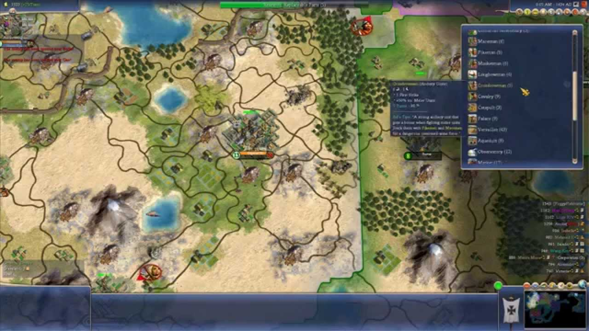

Sid Meir's Civilization IV
Experience the grandeur of human history unfold before your eyes in Sid Meier's Civilization IV. Lead your civilization from the dawn of time to the brink of the future, navigating through ages of discovery, conflict, and progress. Build magnificent wonders, forge alliances, and wage wars in your quest for global supremacy. With its intricate depth and strategic gameplay, Civilization IV offers an immersive journey through the annals of time, where every decision shapes the destiny of your empire. Are you ready to leave your mark on the world stage?
Wikipedia: Civilization IV
Wikipedia: Civilization IV
More pictures

Age of Empires II

Journey through the annals of history in Age of Empires II, where mighty civilizations clash for dominance across the ages. Command vast armies, build majestic cities, and forge alliances in a struggle for supremacy spanning from the Dark Ages to the Renaissance. With its timeless gameplay, rich historical detail, and strategic depth, Age of Empires II offers an immersive experience that captivates both veterans and newcomers alike. Will you write your civilization's saga of glory or succumb to the sands of time? The fate of empires rests in your hands.
Wikipedia: Age of Empires II
Wikipedia: Age of Empires II
More pictures
StarCraft II

Enter the heart of galactic warfare in StarCraft II, where three powerful factions vie for control of the galaxy. Command vast armies of futuristic warriors, lead daring tactical strikes, and master the art of strategic warfare across intense battlescapes. With its gripping campaign, competitive multiplayer, and robust map editor, StarCraft II offers an unparalleled sci-fi experience that challenges players to think fast and adapt quickly. Will you lead your faction to victory and dominate the stars, or will you fall to the relentless onslaught of your enemies? The fate of the universe hangs in the balance.
Wikipedia: StarCraft II
Wikipedia: StarCraft II